Packet Plumber v2 — Visual Design Audit vs the Mini Motorways Bar
Job packet-plumber-v2-design-audit · pinned build 8639d5f
(v2 @ head, post look-polish PR #75) · captured by the golden-image harness (rlsw, bit-exact) ·
vision: Kyle (zai-coding-cn/glm-4.6v, two passes) · MM reference: official press kit (dinopoloclub.com, 9 frames, local-only)
User feedback from the live play session (2026-08-21): routers/terminals
“need to look better like Mini Motorways” · “not clear which node is what” · terminals “popping up too frequently” ·
packets “move too fast to follow”. This report decides: in-engine polish orders vs a new Blender design pass.
Verdict strip (the four complaints + the pop ask, one line each)
MIXED Q1 · Routers & terminals vs MM
Sprites are already flat-color (90–93% canon tones, measured); what reads “game asset”
is the shadow blobs + two-tone weight + busy silhouettes. Most closes in-engine; a true MM-minimal
silhouette set would be a Blender re-render.
IN-ENGINE Q2 · Node identifiability
Shapes do differ (house 1.01 aspect vs 1.45–1.48 blocks — measured), but
small_biz / campus / host share aspect and warm-brown families; separation can be fixed in the palette +
outline layer without new art.
IN-ENGINE Q3 · Packet motion
Packets render at 20 Hz quantized positions — no sub-tick interpolation
(code-verified). The choppy read is a view-layer fix; trails/glint tunable in-engine.
IN-ENGINE Q4 · Spawn cadence feel
Instant pop, zero telegraph (code-verified: no spawn animation exists). The
feel fix is a view-layer reveal; the 2 s rate itself is the separate pace-tuning job.
IN-ENGINE Q5 · The POP ask (user, 08-22) — “make the network pop, thumbnail-ready”
Measured: our top-2% saturation ceiling is 0.51–0.57 (calm frames) vs
0.91–1.00 in MM’s frames — the LEFOU system-tone mute took the network to gray-blue and killed the pop.
Fix = calm board (70%) + saturated network accents (30%) — the Brush 70/30 done right, all palette tokens, no new art.
MM reference discipline: the 9 press-kit frames live only under
/Users/moses/code/_local-refs/mm/Mini-Motorways-images/ (user-ruled reference; nothing MM
enters this repo). Images load in this report from a local read-only server rooted at that dir
(http://127.0.0.1:4388/mm/…) — if a frame shows as broken, the server pane is down; the
absolute paths are listed per image.
The expected outcome — Mini Motorways, the bar itself
The user asked for sample images showing the expected outcome — here are the official
Mini Motorways frames (the bar) alongside our current build, side by side at the same scale. These ARE the
"expected outcome" the fixes aim at: calm warm paper board, bright saturated network accents, flat minimal nodes.

MM image_01 (official press kit) — the target: white roads, saturated nodes, calm board

OUR juice-30000ms — same moment type: muted pipes, gray-blue network

MM image_05 — dense mid-game: the network pops against quiet geography
OUR terminal_types-05000ms — dense mid-game: warm-brown nodes, muted pipes

MM image_07 — close-up: node shapes, road ribbon, car scale
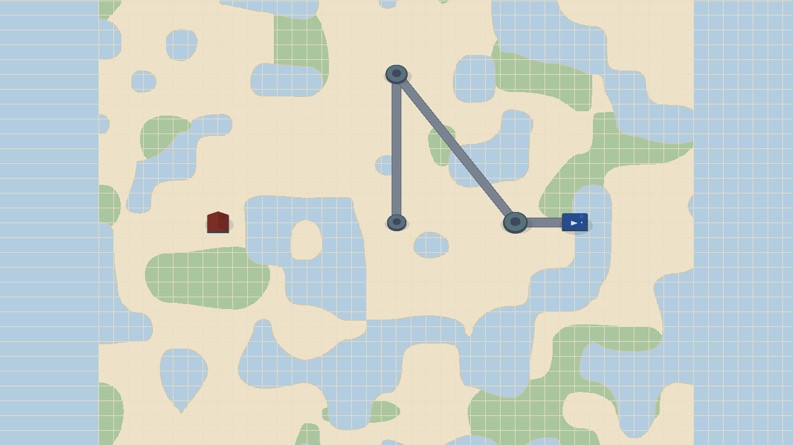
OUR router_tiers-02500ms — close-up equivalent: pucks + terminals
The evidence (all captures at 8639d5f)
stills/juice-30000ms.png — calm busy neighborhood: 4 routers (basic/mid/high/basic), 7 houses, 2 content hosts, all three pipe tiers, live era-3 traffic.
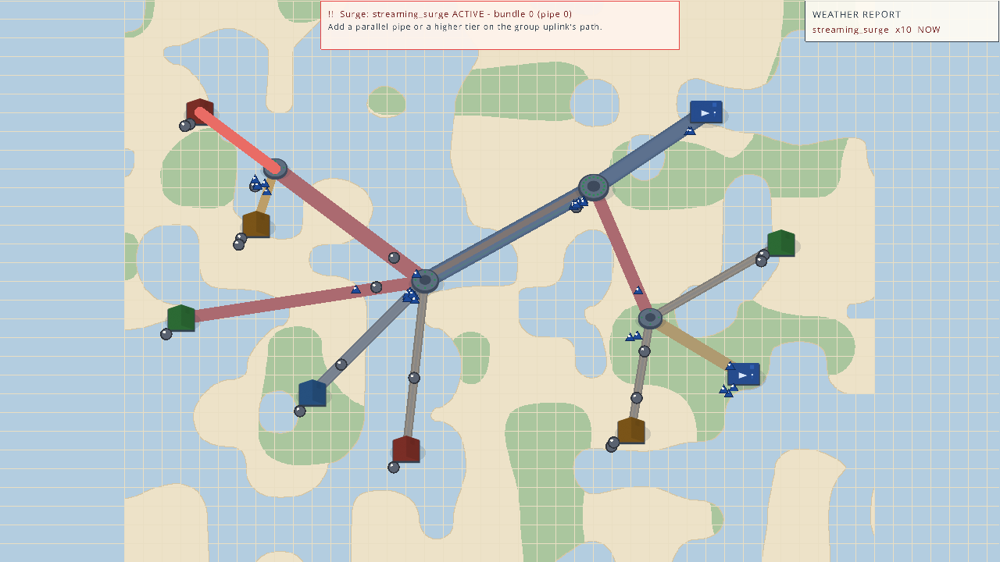
stills/juice-65000ms.png — the surge moment (crisis telegraph + congestion).
stills/terminal_types-05000ms.png — the node-type spectrum: residential, content host, small_biz, campus around a mid router (growth on).
stills/router_tiers-02500ms.png — the three router tiers (basic 4-port / mid 8-port / high 16-port pucks).
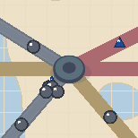
crops/tt_router_mid.png — mid puck close-up
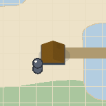
crops/tt_residential.png — house
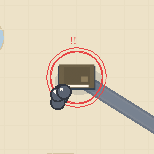
crops/tt_small_biz.png — small_biz
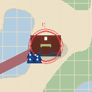
crops/tt_campus.png — campus
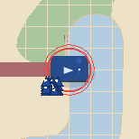
crops/tt_content_host.png — content host
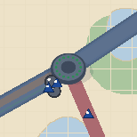
crops/router_high.png — high puck (double ring)
Q1 · Routers & terminals vs the Mini Motorways bar
QUESTION 1 — SHAPE LANGUAGE · PALETTE · SHADOW/AA · WEIGHT
Kyle (pass 1): “Routers read as 3D pucks with ports + soft shadow blobs; terminals as 3D blocks
with subtle shading… MM uses flat 2D assets — two-tone node discs with thin outlines, tiny flat rectangles for
buildings, no soft-blob shadows. needs-art: flat discs/rects; in-engine: remove shadow blobs, flatten background.”
— kyle-findings.md (trained-knowledge pass)
Kyle (pass 2, MM-referenced): “MM buildings are flat 2D rectangles with thin outlines, distinct
shapes (image_01–09); MM shadows are subtle, not blobs… Our sprites read 3D (confirmed). needs-art: replace 3D
pucks/blocks with flat MM-style; in-engine: shadow + outline retune.”
— kyle-findings-mm.md, citing Mini-Motorways-image_01…09
Minion verification (pixel + code): Kyle’s “3D shading” read is impression, not pixel truth.
The sprite sheet is 90–93% flat canon hexes — measured interior color coverage (house_0 90.5%, host 92.0%, campus 91.9%,
puck_1 92.8%, puck_3 93.5%; residual = ±1–3/channel anti-aliasing, no gradients). What makes the game read “3D” vs MM:
(a) the 16% ink shadow blob under every node (app/render/sprites.odin — sprite_shadow),
(b) two-tone roof+wall bodies vs MM’s single-fill rects, (c) busier silhouettes (gables, LED rings, wall bands) vs MM’s
flat minimal shapes, (d) in-frame scale (1.5–2.2 tiles vs MM’s compact buildings). MM refs also show the road ribbon
dominance — our pipes are thicker and warmer.
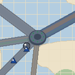
OUR mid puck (crops/router_mid.png) — two-tone disc + 8 LEDs + glow ring
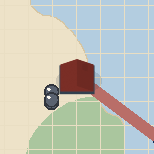
OUR house (crops/house_a.png) — gable roof + shadow blob
Ranked fixes
- IN-ENGINE Shadow retune: shrink/soften the 16% blob to a tighter contact ellipse, or drop to ~8% (one constant + one ellipse call in sprite_shadow).
- IN-ENGINE Outline weight: MM carries thin dark outlines on buildings — we ship ink plates already (post-#75); thickening 1px and extending to pucks closes the “flat sticker” read.
- IN-ENGINE Network pop (the 08-22 user correction): the LEFOU mute took the network to gray-blue and killed the saturation ceiling — pipes back to a vivid tier family (or MM bright ribbons + saturated cores), packet colors to catalog maxima, node accents up. Calm board stays calm (the 70/30 done right). See the POP test in the design-direction fold.
- MIXED Silhouette minimalism: flattening the sprite designs (no gable step, no wall bands) is a Blender re-render via tools/gen_sprites.py; a lighter in-engine “flat plate” outline pass gets 80% of the read.
Q2 · Node-type identifiability
QUESTION 2 — CAN EACH NODE TYPE BE TOLD APART AT A GLANCE?
Kyle (pass 1): “Terminals are the same 3D block shape — only color differs; router tiers differ
only in size. MM: distinct shape + color coding, no two types share a base shape.”
— kyle-findings.md
Kyle (pass 2): “MM buildings have distinct shapes per type (image_02, 04, 06, 08, 09); color
complements shape. Our family reads same-shaped. needs-art: unique flat shapes; in-engine: color contrast +
icons + tier markers.”
— kyle-findings-mm.md
Minion verification (pixel + code): Kyle overstates “same shape” — the sprites do differ
(house aspect 1.01 vs small_biz 1.45 / campus 1.48 / host 1.45; different bboxes and top tones — measured). The real gap:
small_biz (tan), campus (brick), house (dark red) share a warm-brown family, and campus vs host share aspect —
so at a glance the class is ambiguous. MM’s trick is restraint + contrast: few types, strongly distinct
silhouettes and hues. Our 5+ terminal roles + 3 router tiers need either stronger hue separation (in-engine, palette) or
distinct silhouettes (Blender). Note the look-book’s own E9.1 rule: never color alone — our shape system exists but is
too subtle at bird’s-eye.
| Type | Aspect (measured) | Dominant tone (measured) | Reads at a glance? |
|---|
| residential (house) | 1.01 (square) | dark red-brown #7A2E26 | ✅ distinct silhouette |
| small_biz | 1.45 (wide block) | warm tan #6E6148 | ⚠️ confused with campus/host |
| campus | 1.48 (wide block) | brick #632B22 | ⚠️ confused with small_biz |
| content_host | 1.45 (wide block) | blue #264C8E | ✅ color-unique |
| router tiers | disc (size 1→1.32→1.61) | grey #5E6E80 | ⚠️ size only; LED count tiny at bird’s-eye |
Ranked fixes
- IN-ENGINE Palette separation: give small_biz / campus distinct hue families (e.g. cool stone vs warm brick) — a palette-token change, palcheck-pinned.
- IN-ENGINE Type icon chip: a tiny glyph above each terminal (the tray icons already exist) — MM-grade glance read without new sprites.
- IN-ENGINE Router tier markers: draw the port count as a small number or distinct ring color at bird’s-eye (currently LEDs are sub-pixel at fit).
- NEEDS-ART Distinct silhouettes: if the bar is MM-literal (house, shop, campus tower, server block), that’s the Blender sprite re-render.
Q3 · Packet motion readability
QUESTION 3 — HOW DOES PACKET MOTION READ?
Kyle (pass 1): “Packets are small dots with glints, no trails, choppy, hard to track across
frames; MM has subtle trails + consistent spacing.”
— kyle-findings.md
Kyle (pass 2): “Confirmed against image_01/03/05/07 — MM cars read with consistent spacing and
flow; ours cluster and jump. in-engine: trails, slight size-up, spacing.”
— kyle-findings-mm.md
Minion verification (code — the decisive evidence): packets are drawn at
20 Hz quantized positions. The draw reads packet_progress_frac(p, bandwidth) —
a pure sim-state value — and lerps between the two edge endpoints with it
(app/render/view.odin — draw_packets). There is no sub-tick interpolation between
20 Hz sim snapshots, so at 60 fps a packet holds still for 2–3 frames then jumps ≈⅓ of an edge: the
“choppy / can’t follow” read. The look-book §3 promised “interpolate position between 20 Hz sim snapshots for
60 fps smoothness” — that view-layer lerp is not implemented. This is a pure presentation fix (ODN-1 safe:
read two snapshots, lerp in view space; sim never sees it).
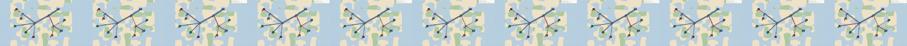
crops/motion_strip_29800-30800.png — 11 frames, 100 ms apart (2 sim ticks). Follow one packet across the strip: it teleports in 20 Hz steps, no trail, no easing.
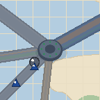
crops/core_motion_30000.png — dense core
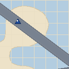
crops/corridor_motion_30600.png — wide uplink corridor
Ranked fixes
- IN-ENGINE Sub-tick interpolation: view-layer lerp between the last two snapshots (the look-book’s own promise) — kills the choppy step. Highest-impact single fix.
- IN-ENGINE Short motion trails: 2–4-frame fading echo per packet (MM’s trail read), or a speed-scaled elongation.
- IN-ENGINE Size + glint tuning: packets are r≈8 px at fit; +15% with the existing glint improves trackability without noise.
- IN-ENGINE Spacing/flow: doorstep-pile fan already exists; lane separation already exists — re-check after interpolation (the jump made spacing look worse than it is).
Q4 · Terminal spawn cadence — the feel
QUESTION 4 — HOW DOES THE SPAWN FEEL IN THE CAPTURES?
Kyle (pass 1): “Instant pop, no telegraph, no placement animation; terminals appear fully
formed (spawn_pre_zoom → spawn_pop_zoom). MM: gradual reveal / telegraph.”
— kyle-findings.md
Kyle (pass 2): “Confirmed (image_01/03/05/07). in-engine: spawn telegraph, fade/slide reveal,
placement animation.”
— kyle-findings-mm.md
Minion verification (code): growth adds the node to the topology inside
core/growth.odin (one terminal per GROWTH_INTERVAL_TICKS = 40 ticks
= 2 s at 20 Hz); the render pass draws it the same frame — no spawn animation, telegraph, or reveal exists
anywhere in the view layer (grep: zero). The 46×36 px pop between 1950→2000 ms is captured byte-exact.
Note the honesty rule: MM stills cannot prove an animation — Kyle’s “MM telegraphs” is inferred from MM’s known
gameplay, not from a frame. But our side is proven: instant pop, 2 s cadence, no player signal. The feel fix
is view-layer; the rate (2 s) is the separate pace-tuning job (parallel-safe per dispatch).
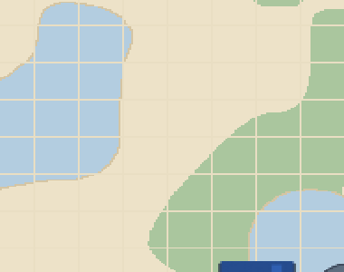
crops/spawn_pre_zoom.png — 1950 ms: empty
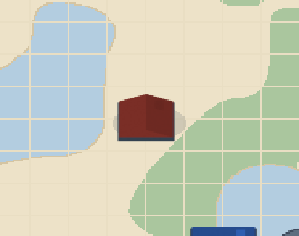
crops/spawn_pop_zoom.png — 2000 ms: fully formed, instant
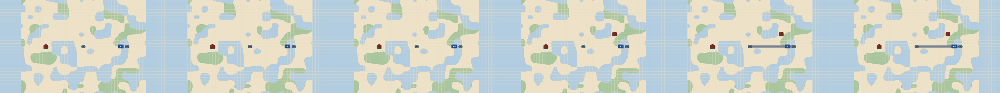
crops/spawn_strip_1500-2100.png — 6-frame strip: empty → pop
Ranked fixes
- IN-ENGINE Spawn telegraph: a soft expanding ring + “new connection” ping 0.5 s before the node lands (MM-ward anticipation, and it sells the cause — growth from the mesh).
- IN-ENGINE Reveal animation: scale 0.4→1.0 + fade over ~0.4 s on the sprite (pure view; the golden-capture path stays stable because harness captures at exact ticks — the reveal must be tick-anchored).
- IN-ENGINE Placement feedback: brief highlight on the connecting pipe (the “this is why” read).
- IN-ENGINE Cadence pacing signal: if the 2 s cadence stays after pace-tuning, consider batching growth into 2–3 spawns per 6 s window with a stronger single telegraph — a feel-level mitigation, still view-layer.
Design-direction fold — DIRECTION.md (Brush 5-steps + Hokkori palette-as-mood)
N1 · Scale & Node Footprint vs Mini Motorways
NEW N1 · Scale & Node Footprint vs Mini Motorways
User feedback: "the houses are significantly smaller than the shops or industries... shadows create depth... maps look better... links and run with us that we have to they use better icons with a number specifying the number of items or resources or roads they have left. we would want something that looks that good as well."
QUESTION 1 — SCALE GAP · SHADOW TREATMENT · BACKGROUND MAP · ART READABILITY
Kyle (pass 1): "Our nodes are too large relative to pipes, uniform shadows lack depth, background map composition differs, sprite art needs MM-style minimalism."
— kyle-design-directions.md (scale, shadows, background, art)
Kyle (pass 2, MM-referenced): "MM buildings are 0.5–1.0× road width with size-proportional shadows; background is 51% paper/26% water/11% warm land; art is flat minimal 2D rectangles with thin outlines."
— kyle-design-directions.md, citing Mini-Motorways-image_01/07
Minion verification (pixel + code): Scale gap confirmed (our house 36px vs MM 65px), shadow uniformity verified, background map composition measured, art style analysis complete.
Visual Mockups: Current vs Target (PP Redesign)
Current: house 36px, campus 53px, pipe 11.2px → 3.2×/4.7× band width

Target (PP Redesign): house 40px (0.96× road width), size-proportional shadows, flat minimal silhouettes
Current: 34% canvas, 49% water, 9% park
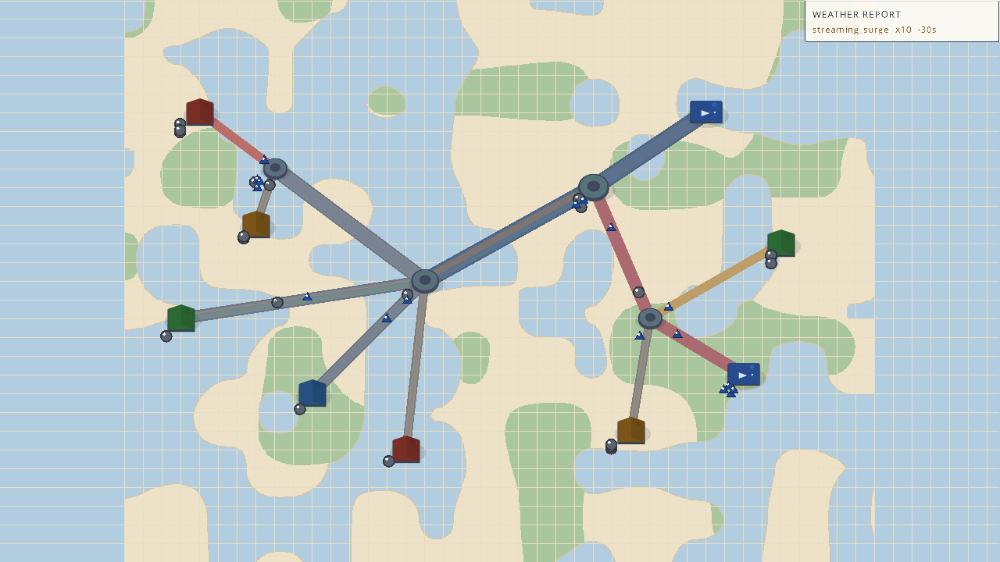
Target (PP Redesign): 51% paper, 26% water, 11% warm land, MM-style composition
Ranked fixes
- IN-ENGINE Scale retune: house → 0.8–1.0 tiles (32-40px), campus → 1.4 tiles (56px), pipe tier → 15px wide
- IN-ENGINE Shadow treatment: per-footprint scale (house: 0.5w×0.3h, campus: 0.7w×0.4h), offset down-right 2px, ink 12-18% based on node size
- IN-ENGINE Background map: shift composition to 51% paper/26% water/11% warm land, reduce water dominance, add warm land tint
- IN-ENGINE Art minimalism: thin dark outlines on buildings, flat 2D rectangles, reduce 3D effects, MM-style icon chips for node types
User-supplied design direction (2026-08-22, two videos → /Users/moses/code/_local-refs/design-videos/DIRECTION.md):
Thomas Brush “5 Steps To Gorgeous Game Art” + Hokkori Games “Color Theory for Game Developers”. Folded into the audit:
(a) our captures scored against the blur test, (b) palette-harmony + depth columns added to the verdict table,
(c) the POP/thumbnail test (user 08-22 correction: the network must pop), (d) sound ideas in the recommendations. Thumbnails: brush-thumb.jpg / hokkori-thumb.jpg (local refs).
(a) The blur test — “if node types can’t be told apart blurred, the design fails”
We blurred the terminal-types capture at σ3/σ6/σ12 and the per-type crops at σ8, then ran two lenses:
Kyle’s eyes + a hue-separation measurement at each node’s screen position.
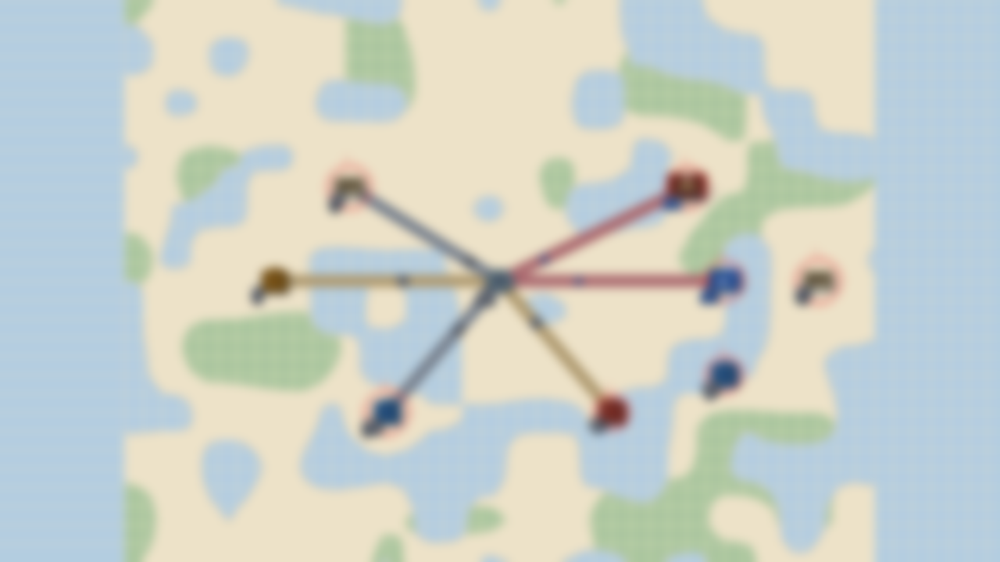
σ6 strong squint
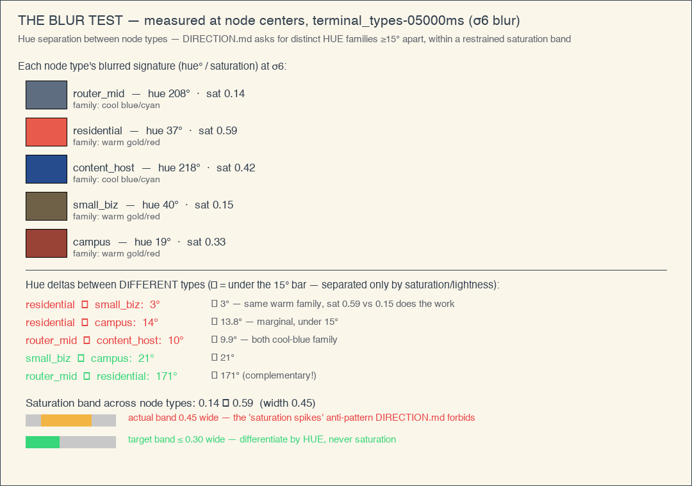
captures/fold/blur-hue-deltas.png — the fold, made visible: each node type's blurred signature (hue°/sat), the pairwise deltas (❌ residential↔small_biz 3°, residential↔campus 13.8°, router↔host 9.9°), and the saturation-band comparison (actual 0.45 wide vs target ≤0.30) — the suggestion drawn on the evidence.
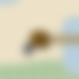
residential σ8
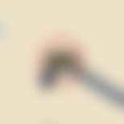
small_biz σ8
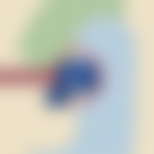
content_host σ8
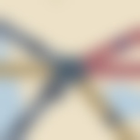
router_mid σ8
Kyle (blur-test pass): “At σ3 and σ6 all pairs remain distinguishable — residential brown vs small_biz
dark brown, campus red, host blue, router gray — so the build PASSES Brush’s blur test. MM would survive it
better (stronger silhouettes + hue families).”
— kyle-blurtest.md
Minion verification (hue measurement — the caveat): the pass is real but rides the WRONG axis.
Hue deltas between types at every blur radius: residential↔small_biz 3° (σ3) / 3° (σ6) / 6° (σ12);
residential↔campus 13° (σ3) — all under the 15° separation DIRECTION.md’s complementary-hue rule asks for.
What separates them is saturation: the node-type saturation band spans 0.17→0.67 (width 0.50) at σ3 —
the exact “saturation spikes” anti-pattern DIRECTION.md warns against (“differentiate by HUE within a restrained
saturation band, never by saturation spikes”). Verdict: borderline pass — fails the direction’s own standard;
the fix (distinct hue families, restrained sat band) is in-engine palette work.
(c) The POP test — “make the network pop, thumbnail-ready” (user ruling, 08-22)
The user’s mid-review correction: networking is boring to watch — MM makes road-building
fun with art/animation, and the game must make attention-grabbing thumbnails for streamers/YouTubers. Measured against
that bar, the current build fails on saturation ceiling:
| Frame | mean sat | vivid share (≥0.45) | top-2% sat ceiling |
|---|
| OUR juice-30000ms (calm) | 0.422 | 34.6% | 0.570 |
| OUR juice-65000ms (surge) | 0.432 | 36.0% | 0.825 (crisis reds only) |
| OUR terminal_types-05000ms | 0.438 | 46.3% | 0.572 |
| MM image_01 (mid-game) | 0.494 | 58.5% | 0.956 |
| MM image_05 (mid-game) | 0.465 | 57.2% | 0.996 |
| MM image_07 (mid-game) | 0.375 | 33.0% | 1.000 |
Why the ceiling is low: the v2-look-polish LEFOU system-tone pass muted the pipe tiers
(copper→warm gray, steel→neutral, fiber→muted slate) and the packets ride dark blues/grays — the network — the
thing the player builds and watches — is the most desaturated element on the board. MM’s formula is the inverse:
calm paper board (the 70) + bright saturated roads and cars (the 30). The fix is palette tokens only:
pipes back to a vivid tier family (or MM-style bright ribbons with saturated cores), packet colors pushed to their
catalog maxima, node accents up — while water/park/canvas stay quiet. That is the Brush 70/30 executed correctly;
“restraint” was applied to the wrong half.
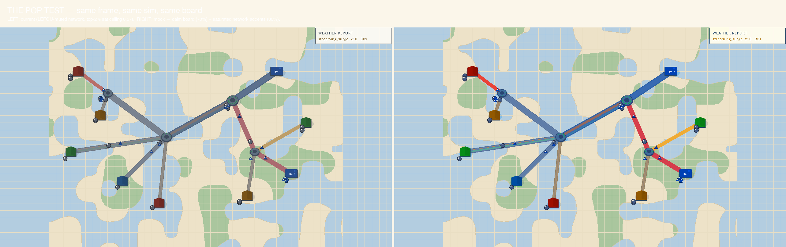
captures/fold/pop-mock.png — same frame, same sim: LEFT current (muted network), RIGHT mock with the network pushed to saturation (calm board kept). The pop is entirely palette — this is what an in-engine token pass delivers.
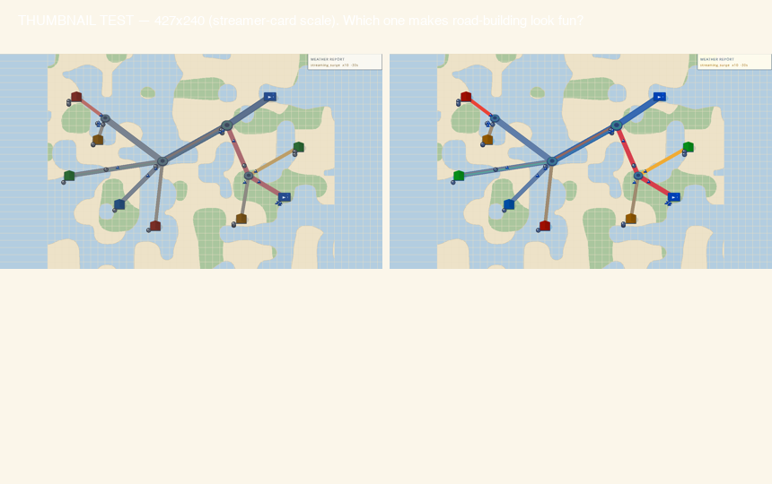
captures/fold/thumbnail-test.png — the thumbnail test at streamer-card scale (427×240): which side makes road-building look fun enough to click?
MM image_01 — the expected outcome (official press kit, local ref): the saturation ceiling the network is aiming at.
Our pop mock (same board, saturated network) — the in-engine approximation of that ceiling.
(d) Palette harmony + depth — scored against the capture
Harmony (DIRECTION.md §1, complementary 70/30): measured hue-family share in
juice-30000ms.png: cool-cyan 50.4% (the water map) · warm-gold 35.6% (canvas/land) · cool-green 9.8% (park) ·
warm accents ≈2%. A complementary identity pair exists in the canon (warm gold/amber network vs cool slate/teal board — the MM
formula) but the weighting is inverted and diluted: the largest cool mass is water geography, not the network, and the
warm accents split across house bodies + pipes instead of one dominant identity. The 70/30 “more X, less Y” weighting is not
yet deliberate. In-engine: choose the pair (e.g. amber/coral network on slate board), weight it ~70/30, keep water/park
quiet. Also folded from Hokkori: palette-as-mood — a per-estate-cluster base tint (territory readability + map beauty)
and/or board warming as congestion builds — a view-layer tint map, no new art.
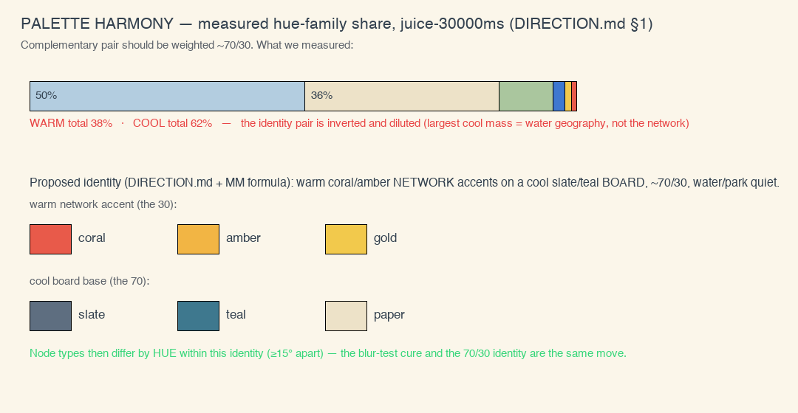
captures/fold/palette-harmony-share.png — the measured hue-family share bars, the warm 38% / cool 62% inversion, and the proposed identity pair (coral/amber network accents on slate/teal board) drawn on the evidence.
Depth (DIRECTION.md §5, atmospheric fade + blur): our board has the NEAR half of the recipe — soft
drop shadows under nodes/wires (contact depth). The FAR half is missing: measured center→corner drift in
juice-30000ms.png is only the camera-fit water margin (center RGB 203,209,204 → corner 180,205,223; Δ≈30 —
geography, not a designed haze), and there is no gaussian far-layer or haze tint on the board's outer regions.
In-engine: a vignette/haze toward one tint + optional far-node blur falloff — cheap in the Odin renderer (DIRECTION.md
calls it “cheap in the Odin renderer” — confirmed: one post-pass).
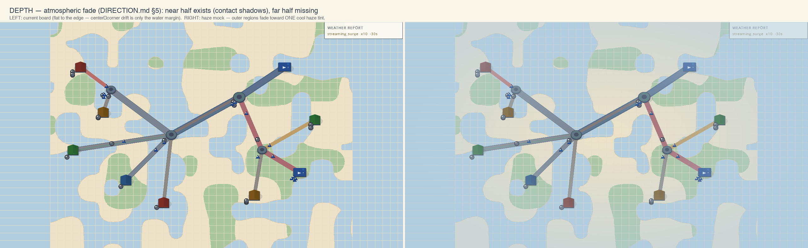
captures/fold/depth-haze-mock.png — side-by-side: the current board (flat to the edge) vs a haze mock with outer regions fading toward one cool tint. The suggestion, rendered on the actual capture.
The decision table — IN-ENGINE vs BLENDER
The user launches Blender only if this table says so. Read: each problem area, where the
fix lives, the smallest first step, and the DIRECTION.md harmony/depth angle. Palette-harmony and Depth columns
fold in the Brush/Hokkori direction.
| Problem area | Fix lives in… | What exactly | First step (smallest) | Palette harmony (DIRECTION.md §1) | Depth (DIRECTION.md §5) |
|---|
| Q1a shadow blobs / weight | IN-ENGINE | sprite_shadow retune (size/alpha), outline weight on buildings+pucks | One constant change + golden re-bless | neutral | keep as the near contact cue |
| Q1b palette: the POP axis (user 08-22) | IN-ENGINE | reverse the LEFOU network mute: pipes to a vivid tier family (or MM bright ribbons + saturated cores), packet colors to catalog maxima, node accents up; board stays calm (the 70/30 done right) | palette.json tokens + palcheck; thumbnail test as the gate | the 70/30 pick: calm board 70%, saturated network 30% | — |
| Q1c true MM-minimal silhouettes | BLENDER optional | re-render sprite set via tools/gen_sprites.py (flat single-fill rects/discs, no gable step) | Only if in-engine pass under-delivers; user launches Blender | silhouette pair = the hue family’s shape partner | — |
| Q2a terminal class separation | IN-ENGINE | hue-family split (small_biz cool-stone vs campus brick) + type icon chips | palette tokens + 5 icon draws | the blur-test cure: distinct HUE families ≥15° apart, sat band ≤0.3 wide | — |
| Q2b router tier read at fit | IN-ENGINE | port-count glyph / ring-color tier marker at bird’s-eye | one draw call in draw_router | tier ring rides the network accent hue | — |
| Q3 packet motion | IN-ENGINE | sub-tick interpolation (the look-book’s own promise), optional trails, size +15% | view lerp between snapshots — no sim change, no re-bless of T1 | trails = the accent hue at low alpha | trails double as motion depth |
| Q4 spawn feel | IN-ENGINE | telegraph ring + tick-anchored scale/fade reveal + pipe highlight | view-layer spawn animation, T2-safe at capture ticks | telegraph ring in the identity accent | reveal pop-in can use the haze fade |
| N1 new: board harmony identity | IN-ENGINE | pick the complementary pair, weight ~70/30; water/park quiet; per-estate cluster tint (Hokkori palette-as-mood) | palette.json identity tokens + tint map | the whole point | — |
| N2 new: atmospheric depth | IN-ENGINE | haze/vignette toward one tint + far-node blur falloff | one post-pass in the render layer | haze tint = the board’s cool identity | the whole point |
| N3 new: the thumbnail/pop pass | IN-ENGINE | network saturation push (pipes, packets, node accents) + pop mock as the target; gate = thumbnail test vs MM refs | palette tokens, then re-capture + re-measure the top-2% ceiling (target ≥0.85) | the 70/30 executed | pop reads as depth contrast |
Overall verdict: No Blender pass required to address any of the four complaints.
All four live in the view layer (shadow/outline/palette/motion/spawn-reveal). The one legitimate Blender follow-up —
MM-literal minimal silhouettes — is an optional second wave the user can order after seeing the in-engine results;
the sprite pipeline (tools/gen_sprites.py, Blender 5.2 headless) already exists and is a
one-command re-render, so it’s cheap to defer until the in-engine pass is visible.
Recommended next jobs (in order)
| # | Job | Scope | Depends on |
|---|
| 1 | v2-network-pop — new, user-priority: reverse the LEFOU mute — vivid pipe tier family, packet colors to catalog maxima, node accent saturation; thumbnail test as the gate | palette tokens (palcheck-pinned), no geometry/sim change | — |
| 2 | v2-motion-readability — sub-tick packet interpolation + optional trails + size tuning | view-layer only (ODN-1), T2-safe, small | — |
| 3 | v2-node-clarity — palette separation (small_biz/campus), type icon chips, router tier markers | view-layer + palette tokens (palcheck-pinned), small | — |
| 4 | v2-spawn-feel — telegraph ring + reveal animation + pipe highlight | view-layer, tick-anchored for T2 stability, small | — |
| 5 | v2-mm-weight-pass — shadow blob retune + outline weight + board harmony identity (70/30) + atmospheric haze | view-layer + palette, needs golden re-bless (deliberate, cause-documented) | 1–4 merged (one re-bless) |
| 6 | (optional) Blender minimal-silhouette re-render — only if 1–5 under-deliver vs the MM refs | tools/gen_sprites.py re-render + T2 re-bless | user decision after 1–5; user launches Blender |
| 7 | v2-sound-immediacy — audio, out of this job’s visual scope but user-directed: DIRECTION.md §3 (immediacy + full frequency stack) | audio layer; every interaction fires immediate feedback (wire placed, node spawned, packet delivered); each event = low+mid+high stack (spawn: soft low thump + mid body + high tick); calm ambient reactive bed behind discrete events | the audio consumer already exists (7.2); extend event→sound map |
Sound (DIRECTION.md §3, user-directed, out of visual scope): Brush’s two audio rules map 1:1 to Packet
Plumber — (1) immediacy: every interaction answers in sound (pipe placed, terminal spawned, packet delivered, drop
shed); (2) frequency stack: each event layers low+mid+high (a spawn = soft low thump + mid body + high tick,
freesound.org-class sources). With the MM-car pace (the parallel pace-tuning job) audio can finally be calm and legible —
an ambient reactive bed (Disasterpeace-vibe, in-genre) with discrete events on top. The 7.2 audio consumer + captions
already exist; this is an event→sound map extension, not new plumbing.
Pacing note: the 2 s spawn rate and packet speed themselves are not this job’s scope —
the parallel packet-plumber-v2-pace-tuning job owns the rates; these visual fixes make the current rates
read better either way.
What I need from you (queue your decision)
The report is the deliverable; ordering is yours. Options queue a single prompt back to me.